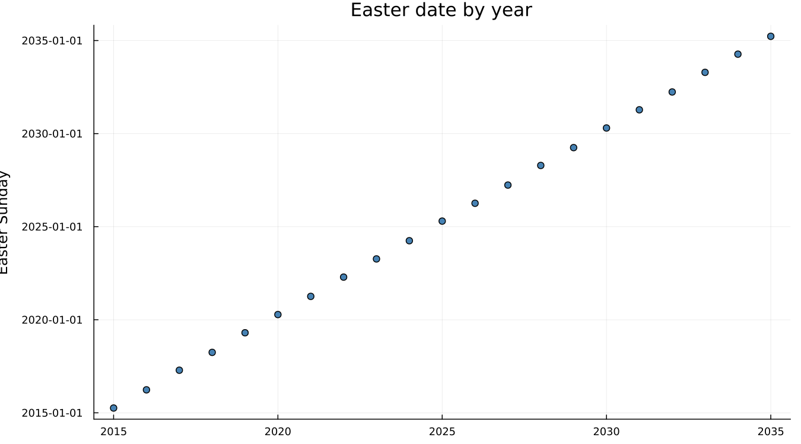
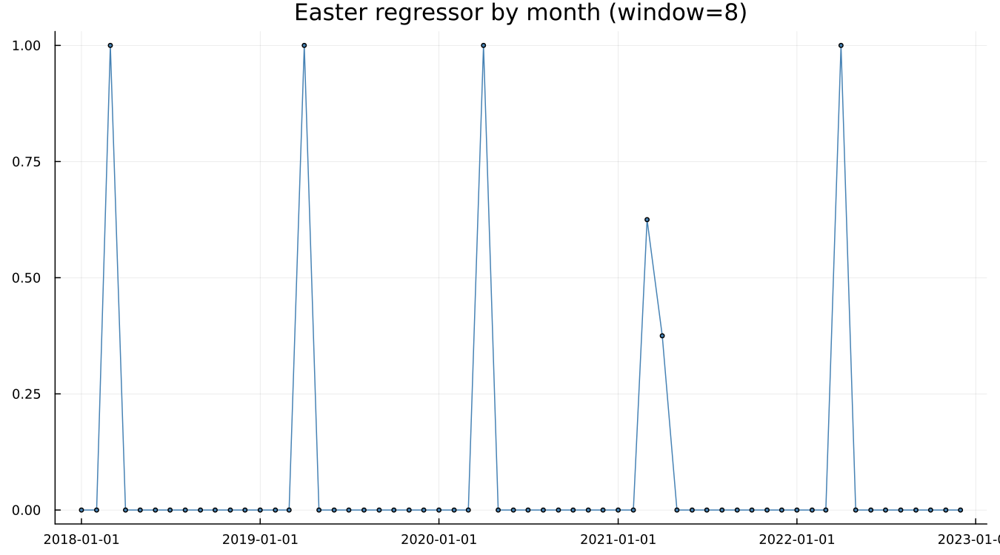
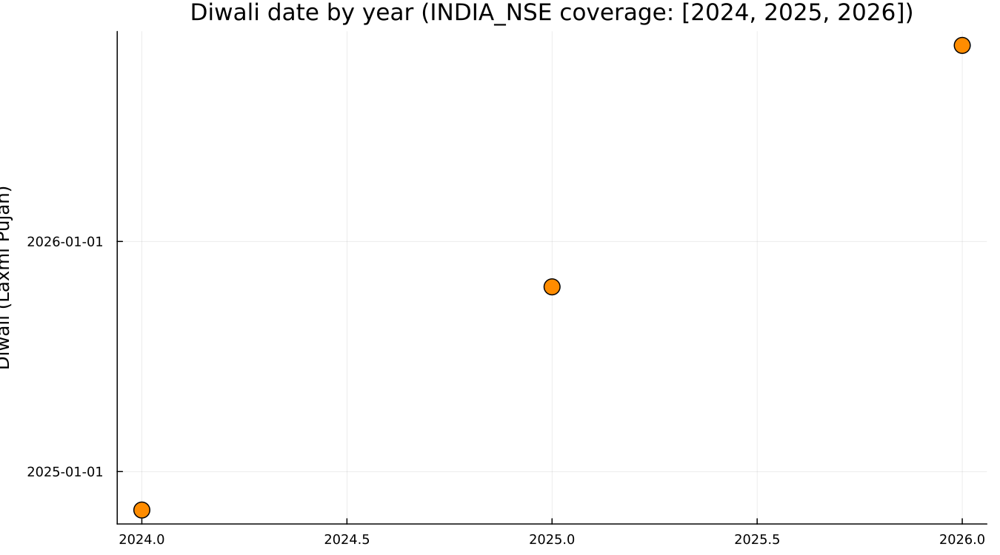
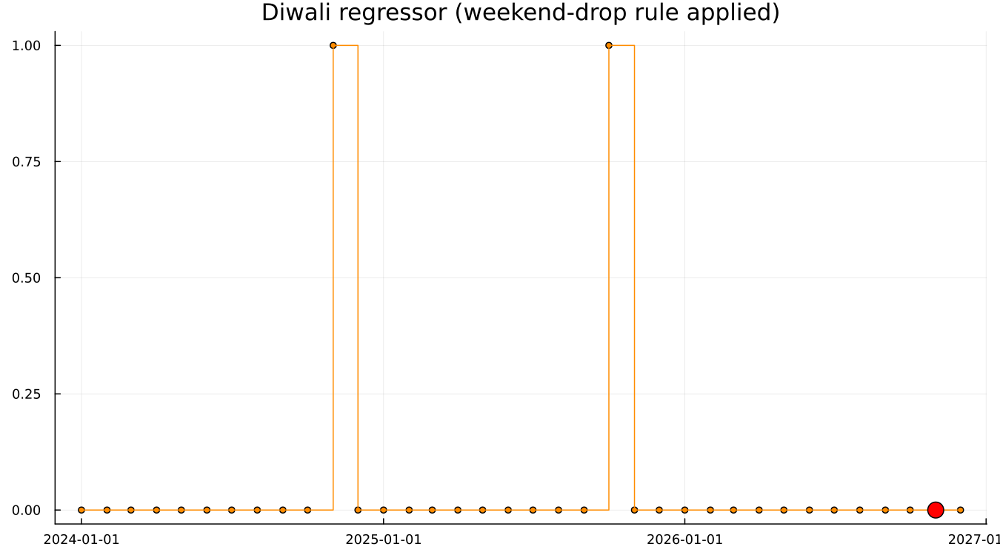
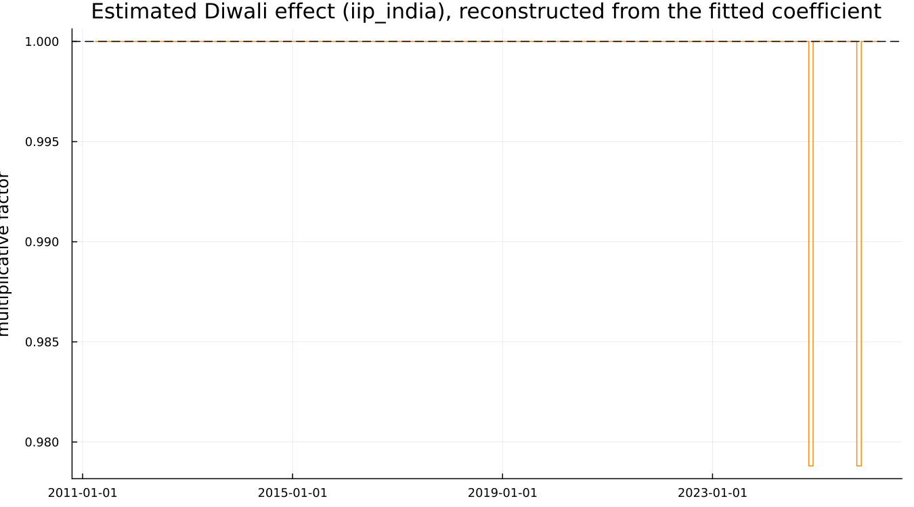

11. Moving Holidays
11.1 The problem a fixed seasonal factor cannot solve
A holiday fixed to a calendar date — Christmas, always December 25 — is absorbed cleanly by December's own seasonal factor, year after year. A holiday whose date moves cannot be so absorbed, because the month it lands in changes from year to year, and a seasonal factor is defined per calendar month. That single distinction is this whole chapter.
11.2 Easter
Easter's date varies across roughly a month, landing in either March or April:

Over 2015–2035, Easter falls in March in 5 of 21 years and in April in the rest — genuinely split across two calendar months, not a fixed December-25-style date.
11.3 The window model
X-13's Easter regressor spreads the holiday's effect over a window of w days immediately before Easter, allocated to whichever calendar months that window overlaps — Easter[1] means a one-day window:

On the canonical airline spec, Easter[1]'s estimated coefficient is real and significant: coef = 0.017767, se = 0.007158, t = 2.482. The regressor is centred — long-run monthly means are subtracted out — so that it does not compete with the ordinary seasonal factors sitting alongside it in the same model.
11.4 Diwali, and why nothing built in fits
X-13 ships built-in support for Easter, Labor Day and Thanksgiving — three holidays, all specific to the U.S. and European calendar. Diwali, observed across India, moves between October and November from year to year and has no built-in equivalent (neither does Chinese New Year, nor Eid). The dates themselves, from this package's own INDIA_NSE calendar table (which currently covers 2024–2026 — the real, current coverage, not a longer illustrative range):

2024's Diwali fell on a Friday, 2025's on a Tuesday, 2026's on a Sunday — genuinely moving across the calendar and, in 2026's case, landing on a day that was already a non-trading weekend.
11.5 Building the regressor
custom_holiday_regressor builds exactly the data a regression { user = (...) } block requires: 1.0 in whichever month each year's holiday falls, 0.0 elsewhere — with one deliberate refinement.

The weekend-drop rule is a real methodological choice, not an implementation detail. A holiday that lands on a day that was not a trading day in any case produces no incremental trading effect to explain, so it contributes 0.0 rather than 1.0 even in the month it falls in — visible above as 2026's Sunday-Diwali month, which the regressor correctly declines to flag. A simpler, bare month-dummy approach would flag it regardless of weekday, silently overstating the effect in years where the holiday happened to fall on a day nothing was open in any case. This is a genuine improvement over the simplest possible construction, not a cosmetic one.
A real trap, found while building this chapter's own example: adding the user regressor's own name to regression_variables — the natural thing to try, by analogy with how built-in regressors like "td" are selected — makes the real binary reject the spec outright (Regression variable name "..." not found), regardless of what the regressor is actually named. user = (name) alone is what includes a user-defined regressor in the model; naming it a second time in variables = breaks it rather than reinforcing it. Confirmed directly against the binary, not inferred from the error message alone.
11.6 The estimated effect
components(...; which = :user) requests X-13's own .usr table, which the package correctly asks the binary to save (regression { ... save = (usr) } renders and runs without error) — but the real binary simply does not materialise a .usr file for a holiday-type user regressor under this configuration, confirmed directly by inspecting the run's own output directory. This is a genuine characteristic of X-13 itself, not a package routing bug, and is worth stating plainly rather than silently working around. The estimated effect below is reconstructed directly from the fitted coefficient instead: a real, small, negative effect, coef = -0.0214 in log space, a -2.1% multiplicative dip in the two Diwali months the regressor actually flags within iip_india's own history (2026 has not yet occurred within the data):

A modest, real result — industrial production dips slightly around Diwali, plausibly reflecting reduced factory activity during a major holiday period — reconstructed honestly from what two flagged months in a fifteen-year series can actually show, and not overstated.
See also: Chapter 1 §1.3, where this exact example first motivated the need for a moving-holiday regressor. Chapter 12 for iip_india's other real feature — a dramatic, unrelated COVID-era level shift.